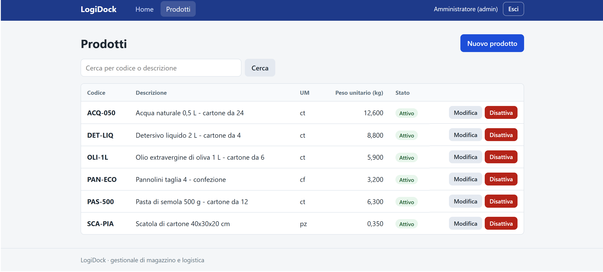

Prodotti Pronto
Lista con ricerca, creazione, modifica, disattivazione e riattivazione. Non si cancella mai: un prodotto ha bancali collegati.
LogiDock è un gestionale web per una piccola azienda di logistica: prodotti, bancali in ingresso, tracciabilità, viaggi, bolle e DDT, utenti e ruoli. È costruito da zero in PHP 8.3 e MySQL 8, senza framework, per capire come funziona ogni pezzo.

Il progetto avanza una fase alla volta. Oggi sono pronte le fondamenta e l'anagrafica prodotti; il resto è già previsto nello schema del database.
Lista con ricerca, creazione, modifica, disattivazione e riattivazione. Non si cancella mai: un prodotto ha bancali collegati.
Login sicuro con due ruoli: l'admin modifica, l'operatore consulta.
Fornitori, clienti con il loro giro, veicoli, rimorchi, trasportatori, posizioni e tipi di bancale (EPAL 1 ed EPAL 3). Misure, altezza massima e giorni dell'avviso si cambiano da una schermata, non dal codice.
Il documento del fornitore con le sue date e i bancali con prezzo, peso segnato e posizione. Ogni bancale riceve un codice (PAL-2026-000123) e un movimento nello storico che non si può alterare. Se il peso segnato non torna con quello calcolato, l'app lo evidenzia.
Composizione dei viaggi sui veicoli e bolle / DDT numerati in automatico. Niente pianificazione automatica per ora.
Ogni richiesta attraversa gli stessi livelli, e ognuno ha un solo compito. Così il codice resta leggibile e ogni regola sta in un posto preciso.
Browser
│ HTTP
▼
Nginx ──► public/index.php (front controller)
│
▼
Application ──► Router ──► [Middleware] ──► Controller
│
▼
Service
│
▼
Repository
│
▼
MySQL
Controller ──► View (template PHP + layout) ──► Response ──► BrowserLe rotte stanno tutte in config/routes.php. I pattern come /products/{id} diventano espressioni regolari, e distingue 404 (non esiste) da 405 (metodo sbagliato).
CSRF, login e ruolo admin si applicano a interi gruppi di rotte. Il primo dichiarato è il più esterno.
Nessun autowiring: i collegamenti tra le classi si leggono in Application::registerServices().
Nessuna eccezione ingoiata: arrivano a un gestore centrale che scrive il log e mostra una pagina generica.
Poche scelte, tutte spiegabili.
| Componente | Scelta |
|---|---|
| Linguaggio | PHP 8.3, tipi ovunque, strict_types, PSR-12 |
| Database | MySQL 8 con PDO e prepared statement, niente ORM |
| Frontend | HTML, CSS e JavaScript vanilla, template PHP lato server |
| Web server | Nginx + PHP-FPM su Ubuntu Server 24.04, raggiungibile solo dalla rete locale |
| Sviluppo | PHP e MySQL in locale, oppure Docker Compose |
| Pacchetti Composer | vlucas/phpdotenv e phpunit/phpunit (solo sviluppo) |
Le protezioni sono nel codice, non solo nella speranza che nessuno sbagli.
password_hash e password_verify. Anche con un'email inesistente si fa un controllo finto, così il tempo di risposta non rivela chi è registrato.
Cookie HttpOnly e SameSite, nuovo ID a ogni login, scadenza per inattività. In sessione c'è solo l'id: ruolo e stato si rileggono dal database, quindi disattivare un utente ha effetto subito.
Ogni POST richiede un token, altrimenti la risposta è 419.
L'input non finisce mai concatenato nell'SQL, e ogni output HTML passa da e().
pallet_movements è append-only: due trigger bloccano UPDATE e DELETE, e in produzione l'utente dell'app può solo leggere e inserire.
Uno applica le migrazioni, uno è l'app con permessi minimi, uno fa i backup in sola lettura.
Lo schema è già pronto per tutte le funzionalità future, in 11 migrazioni SQL numerate. Una migrazione già applicata non si modifica: il runner se ne accorge dal checksum e si ferma.
users ─┬──< pallets >── products pallets: stato corrente di ogni bancale
│ │ └───── suppliers pallet_movements: storico append-only (solo INSERT)
│ └──────── warehouse_locations
├──< pallet_movements >── pallets, warehouse_locations (da/a), trips
├──< trips >── vehicles
│ ├──< trip_items >── pallets
│ └──< transport_documents (bolla / DDT, numerati con number_sequences)Quantità e pesi sono DECIMAL nel database e stringhe validate in PHP: 12,5 diventa 12.500 senza errori di arrotondamento.
Nel database sono sempre in UTC, e si convertono in ora italiana solo quando si mostrano.
151 test PHPUnit. Quelli sui service (prodotti, anagrafiche, impostazioni) usano i veri repository su un database di test, dentro una transazione che si annulla a fine test.
| Test | Tipo | Cosa verifica |
|---|---|---|
RouterTest | unitario | rotte, parametri, 404 e 405, ordine dei middleware, gruppi |
RequestTest | unitario | normalizzazione di percorso e metodo |
MigrationRunnerTest | unitario | lo spezzatore delle istruzioni SQL |
ValidatorTest | unitario | ogni controllo del validatore, con valori limite e input ostili |
ProductServiceTest | integrazione | validazione, duplicati, attiva/disattiva, ricerca |
MasterDataServicesTest | integrazione | regole delle anagrafiche: giri dei clienti, targhe, capacità, EPAL |
InboundServiceTest | integrazione | arrivo completo, codici consecutivi, capacità, peso, documento duplicato, tutto-o-niente |
DatabaseTransactionTest | integrazione | commit, rollback e savepoint nelle transazioni annidate |
SettingServiceTest | integrazione | valori di partenza, salvataggio tutto-o-niente, limiti |
Una rete di sicurezza impedisce ai test di toccare il database vero: si rifiutano di partire
se il nome del database non finisce in _test.
Servono PHP 8.3, Composer e MySQL 8.
composer install
Copy-Item .env.example .env # poi modifica i valori in .env
php bin/migrate.php # crea le tabelle
php bin/seed.php # dati di esempio (solo sviluppo)
php -S localhost:8000 -t public # apri http://localhost:8000
Il seed crea admin@logidock.test e operatore@logidock.test, con le password
scelte in .env. I comandi per eseguire i test e la guida all'installazione su Ubuntu
sono nel README e in deploy/README.md.
Nota onesta
I file di Docker, Nginx, PHP-FPM e deploy.sh sono scritti ma non sono ancora stati
eseguiti: sul PC di sviluppo non ci sono Docker né Ubuntu. Si proveranno alla prima installazione.
LogiDock è source available con doppia licenza: il codice è pubblico e si può studiare, ma l'uso è gratuito solo per scopi non commerciali.
Studio, ricerca, hobby e progetti personali, e l'uso da parte di enti benefici, scuole e università, enti pubblici di ricerca, organizzazioni per la salute, la sicurezza o l'ambiente e istituzioni governative.
PolyForm Noncommercial License 1.0.0 (testo ufficiale, in inglese)
Per esempio un'azienda che lo usa per la propria attività, o chi lo offre a terzi come servizio. Serve un accordo di licenza commerciale separato con il titolare dei diritti.
Come funziona la licenza commerciale · scrivi a riccardo.melis06@gmail.com
Questo è solo un riassunto: valgono il file LICENSE e, per l'uso commerciale, l'accordo scritto. Le librerie usate dal progetto mantengono le loro licenze.